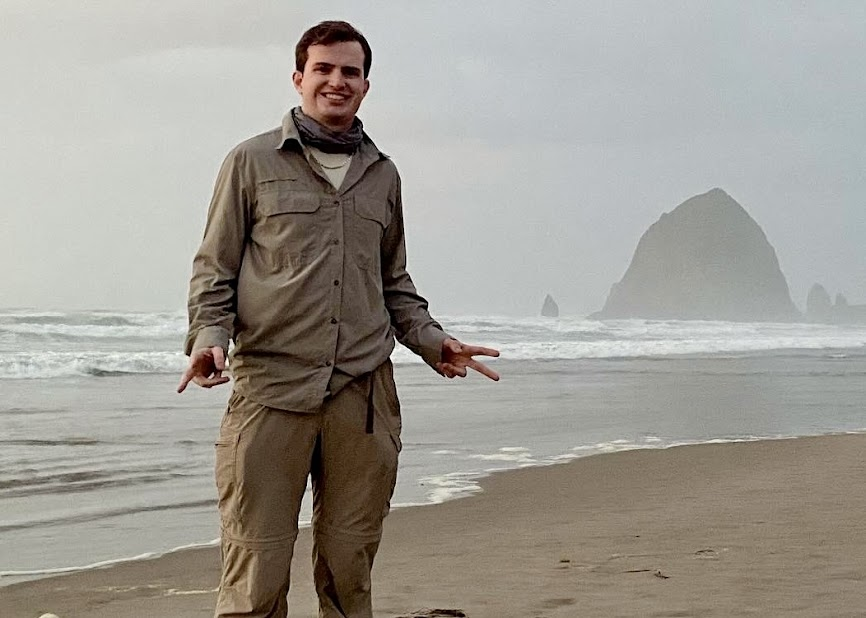

About Me
Hello, my name is Ryan. I’m from Western New York. I enjoy traveling and spending time with friends and family. I started this website as an excuse to learn web development and to share my bike tour story.
On this website, you’ll find journal entries from each town and city I visited, located in the “BIKE TOUR” tab. Photos are included in each entry. I also have an interactive map showing all the places I stopped at, located in the “MAP” tab.
Thank you for visiting!